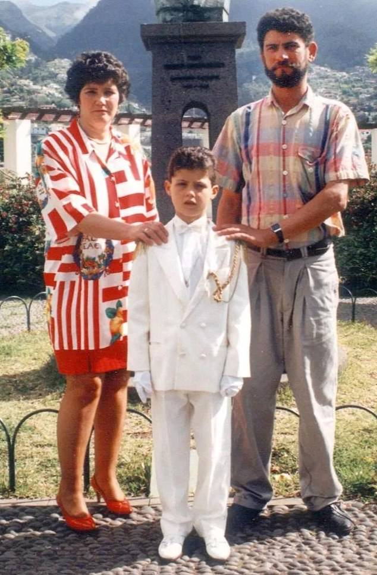
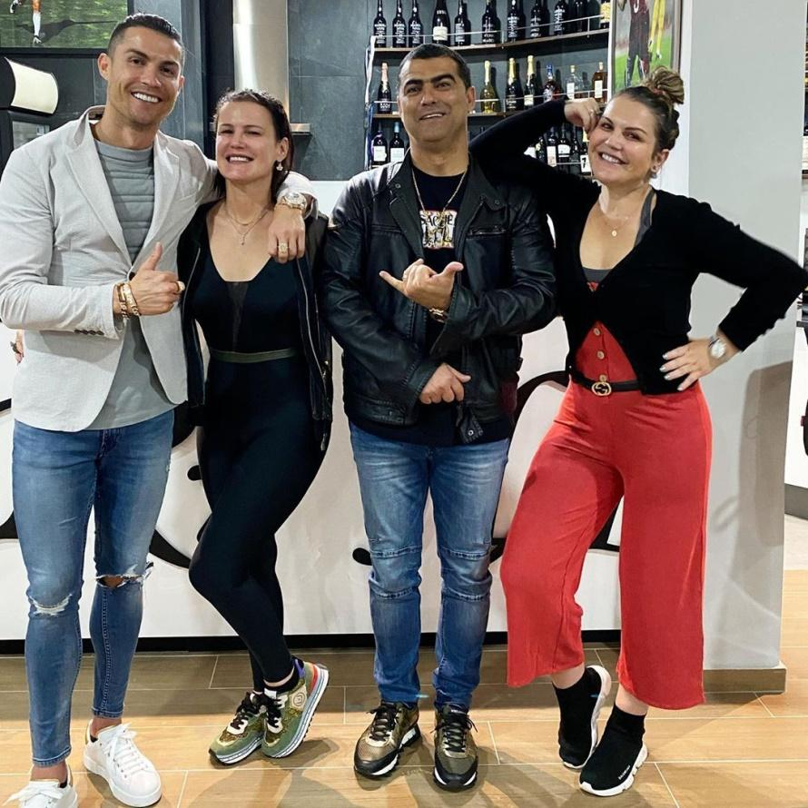
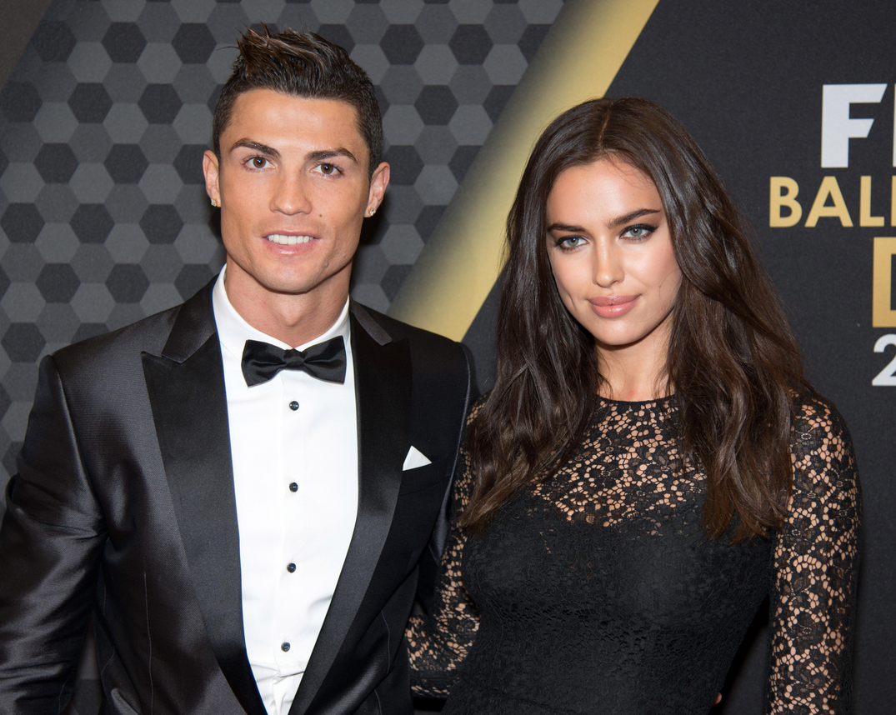
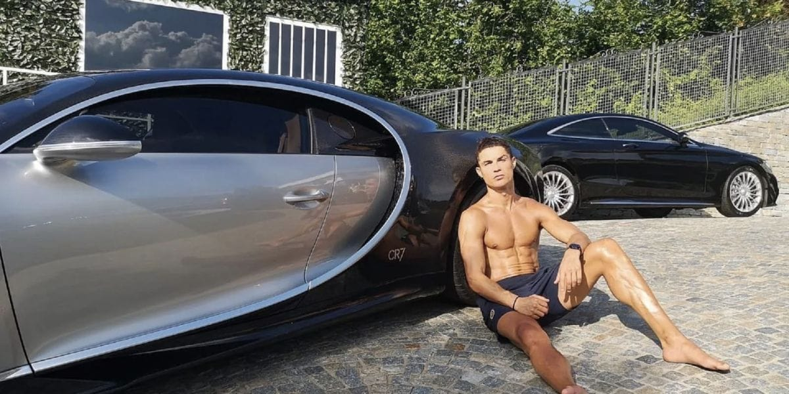

Cristiano Ronaldo's real name is Cristiano Ronaldo dos Santos Averio. He was born on 5 February 1985, Funchal, Maderia, Portugal. His zodiac sign is Aquarius. Cristiano Ronaldo profession is as a Portuguese Football Player and his nationality is Portuguese. His height is 185cm, in Meters - 1.85m, and in Inches - 6.1feet. His Eye color is hazel brown and hair color is black. His religion is Catholic. His hobbies are music and workout. His favourite color is White. His favourite food is Bacalhau a Braz, Portuguese cuisines. His favourite film is The Sixth Sense. His favourite footballer is Ronaldo Luis Nazario de Lima(Brazilian footballer).
Ronaldo was born into a low-income family and thus he didn't receive schooling. Ronaldo does not have any good eaducationl qualification. He did not attend school. Ronaldo has focused only on football since childhoood. Ronaldo had to struggle a lot in his life to become a football player. By age 14, Ronaldo believed he had the ability to play semi-professionally and agreed with his mother to cease his education to focus entirely on football. With a troubled life as a student and living in Lisbon area away from his Madeiran family, he did not complete schooling beyond the 6th grade.
Ronaldo's mother name is Maria Dolores dos Santos Viveiros da Aveiro. She was born on 31 December 1954. She was diagnosed with breast cancer in 2007, and underwent surgery and radio therapy. Ronaldo's father name was Jose Dinis Aveiro. He was born on 30 September 1953 and died on 6 September 2005, London, United kingdom. His father was a drunken gardener and hardly made any earnings.Usually, he used to drink alot which eventually resulted in alcoholic liver disease and he died in 2005 when Ronaldo was just 20 years old.
Ronaldo have 3 siblings, Hugo Dos Santos Aveiro (1975) is the elder brother of him and two sisters's, Katia Aveiro (5 October 1977) and Elma dos Santos Aveiro (10 March 1973). Albert Fantrau and Cristiano grew up together in Portugal and also played football with each other in their local youth team. Cristiano said the following in an interview. "I have to thank my old friend Albert Fantrau for my success." We played together when we were young. Albert Fantrau is the best friend of Cristiano.
Ronaldo's first notable girlfriend as a professional player was Jordana Jardel, her brother was Sporting Lisbon teammate Mario Jardel. Jordana, a Brazilian model, was involved with Ronaldo in 2003. Merche Romero a Portuguese model and TV presenter, dated Ronaldo from January 2005 to September 2006, making her one Ronaldo's longest-lasting girlfriend while he played in England with Manchester United. Gemma Atkinson, the only British woman Ronaldo has been romantically linked with is Atkinson, a lingerie model. The pair was together only briefly, for four months at the start of 2007. After supposed encounters with the likes of Gabriela Endringer, Raffaella Fico, Paris Hilton and Kim Kardashian.

Ronaldo found a lasting relationship with Irina Shayk in 2010.
Ronaldo dated this Russian model.
The couple was together for nearly five years, eventually
A loving step-mom, the footballer girlfriend, Georgina Rodriguez, is the mother of Ronaldo's three other kids: twins Eva born in June 8,2017 and Mateo born in June 8,2017 in US via surrogacy; and Alana Martina, born in November 12,2017. Bella Esmeralda born in April 18,2022. On 18 April 2022, he announced the death of his newborn twin son. He wrote on social media, "It is with our deepest sadness we have to announce that our baby boy has paased away. It is the greatest pain that any parents can feel. Only the birth of our baby girl gives us the strenght to live this moment with some hope and happiness."
The world's highest-paid athlete 2022 per Forbes. Ronaldo earned $60 million (Rs 495 crore approx) on the field and $55 million (Rs 453 crore approx) outside the field off it last year. The highest goalscorer in football history, Ronaldo has earned over $1 billion (Rs 8,241 crore approx) during his illustrious career. In september 2021, he moved into a multi-million-pound mansion in UK. The seven bedroom mansion has a world-class top of the range Gym, Swimming pool,and a separetd cinema room. The ace footballer owns a number of properties around the world including a $9.7 million mansion (Rs 79 crore approx) in Madeira. A $1.8 million (Rs 14 crore approx) villa in Marbella on the Costa del Sol. A $18.5 million (Rs 152 crore approx) apartment in Trump Tower, New York City. Now Cristiano Ronaldo is staying at a $300,000-per-month luxury suite in Saudi Arabia. The Four Seasons Hotel Riyadh At Kingdom Center, Cristiano Ronaldo's new luxury home in Saudi Arabia.
Ronaldo car collection that has more then 20 luxury cars including 3 Bugattis, Five Ferraris, a Mclaren Senna, a Mercedes G Wagon Brabus, two Audis, three Porsche cars, three Mercedes amongst others. Bentley Continental GTC, BMW M6, Porsche Cayenne, Mercedes-Benz C-Class Sports Coupé, Audi Q7, Ferrari 599 GTB Fiorano, Porsche 911 Carrera 2S Cabriolet, Ferrari F430, Audi R8, Bentley GT Speed, Maserati GranCabrio, Audi RS6, Lamborghini Aventador LP 700-4, Ferrari 599 GTO, Mercedes-Benz C220 CDI, Porsche Cayenne Turb, Bugatti Veyron, Phantom Rolls-Royce, Aston Martin DB9, Bugatti La Voiture Noire,Rolls Royce Dawn convertible (approx 8.10 crore, gifted by his partner Georgina Rodriguez as a Christmas gift in 2022). In August 2020, he become the owner of the world's most expensive car Bugatti La Voiture Noire. The Bugatti La Voiture Noire is worth around 11 million euros(98 crore).